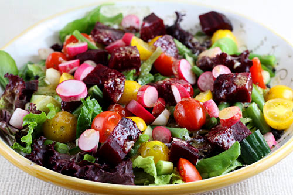

| Importance of Salad |
|---|
 In recent years salads have taken on a more important role in the modern kitchen. This has been due to the increase in health awareness along with a larger variety of quality fresh produce being supplied across the country. Salads now have a n important place on the menu as entrées and chefs continue not only to search out new varieties of fruit and vegetables but have begun to look back to those heirloom varieties that have not been readily available for sometime.
They are suitable for eating at any time of the day or season of the year but make a particularly welcome contribution to the menu in the summer months when a wide variety of fresh home-grown produce is available at reasonable prices. They can be offered as part of the hor-d’oeuvre selection or as as an accompaniment to cold meats, cold dishes or grills and roast meats
It is important when making salads to understand the quality of ingredients being used. The fresher the ingredients the more careful one has to be, not to cover up the nuances of those fresh ingredients. In some parts of the country it is difficult to obtain such ingredients on a regular bases and in these cases understanding how to bring out the best of what the product has to offer is paramount. Salads should be simple and fresh in presentation and flavor. They should be well thought out , and balanced in texture and nutritional content.So to put in simple words, Salad should consist of :
A NATURAL SOURCE OF FIBER Your leafy greens and raw veggies are a superb source of natural fiber, and consuming enough fiber each day has several health advantages: Fiber helps to reduce LDL or “bad” cholesterol. It helps to control blood sugar. NUTRITIONAL BENEFITS OF FRESH FRUITS AND VEGETABLES The idea that fresh vegetables and fruits are essential to our good health and well-being isn’t anything we haven’t heard before, but it’s good to be reminded of it every so often. The following quote is from an article at the Harvard School of Public Health: WEIGHT CONTROL Eating a fiber-rich salad before your entree will help you to feel full faster, so you’ll consume less calories than you might when a meal is served without this appetizer. The more raw vegetables you can incorporate into your salad, the greater the potential positive effects will be. A DAILY SALAD WILL AID YOUR INTAKE OF HEALTHY FATS Add a couple of tablespoons of mixed raw or roasted seeds like pumpkin, sesame, sunflower and ground flax or chia to boost your daily intake of good fats. Experimenting with different kinds of oils in your dressings will help with this, too. BUILD STRONG BONES Low vitamin K levels have been linked with low bone mineral density in women. For healthy bone growth, a recommended full daily serving can be found in just 1 cup of watercress (100%), radicchio (120%) or spinach (170%). PROTECT YOUR PEEPERS The carotenoids found in the green leafies like spinach, Romaine and Red Lettuce help the eyes to adjust from bright to dark, and to filter out high intensity light levels, protecting them from the formation of damaging free radicals IMPROVE MUSCLE PERFORMANCE Well, it turns out Popeye knew his stuff. The nutrients found in spinach not only help to build strong bones, they also help to improve the performance of the mitochondria – little structures inside our cells that help to produce energy, as well as inform and power our muscles. PROTECT YOUR HEART Romaine lettuce contains two key nutrients in significant levels that help to protect the heart muscle: folate and fiber. High levels of folate have been shown to assist in the prevention of stroke and cardiovascular disease (4).